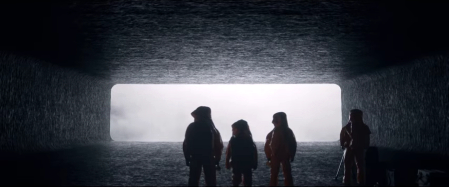

ArrivalArrival is a science fiction film directed by Denis Villeneuve, adapted from the screenplay by Eric Heisserer, based on the short story ‘Story of Your Life’ by Ted Chiang and starring Amy Adams, Jeremy Renner and Forest Whitaker in the main roles.
The film opens with a flash-forward to a near future, where Louise Banks, a renowned linguist and university professor, is caring for her gravelly ill adolescent daughter who is dying from cancer. Back in the present, while Louise is giving a lecture at the university, a dozen of gigantic extraterrestrial spacecraft appear seemingly from nowhere and take their positions at twelve strategic locations across the globe.
The contact with the U.S.-based extraterrestrials is initially dealt with by the military under the command of U.S. Army Colonel Weber (Forest Whitaker) but he, and his unit, soon find themselves in dire straits because of the communication barrier and are forced to enlist the help of Louise Banks (Amy Adams) and Ian Donnelly (Jeremy Renner) for their expertise in the fields of linguistics and theoretical physics, respectively.
The couple is brought to a makeshift U.S. military base in Montana near one of the alien spacecraft and assigned with the task of establishing the reason of extraterrestrials’ arrival. After being pressured to come up with a quick answer, Louise explains to the Colonel Weber that in order to answer the seemingly simple question: “Why are you here?” (or better still “What is your purpose on Earth?”, because the former question is too ambiguous) one must first establish the structure of the alien language as otherwise the translation of even the simplest of phrases can be compromised, leading to a major misunderstanding, which, taking into account the gravity of the situation, could result in a tragedy. She quotes the example of Captain Cook, who, according to a legend, was exploring Australia’s inland alongside expedition’s naturalist Sir Joseph Banks when they suddenly happened upon a strange hopping animal with big ears and a long tail. Intrigued, they asked the native who accompanied them what the creature was called. Bemused, the local answered: “kan-ga-roo” – an aboriginal phrase meaning “I don’t understand you”, which Cook and his companion took to be the name of the creature, and the name “kangaroo” stuck.
Having clarified this issue, the small team led by Louise and Ian gets about the task of analysing the alien language. After the first contact with two seven-limbed, seven-fingered aliens on board of the spacecraft, the two quickly establish that the extraterrestrials, or ‘heptapods’ how they became known, have a written language of a sort that consists of complicated circular symbols and start composing a dictionary of the alien symbols corresponding to basic English words and phrases. At the point when the vocabulary contains enough words, phrases and conceptual terms to enable basic communication between humans and heptapods, Colonel once again presses the issue of the motive behind aliens’ visit. When presented with the question what is the reason behind their arrival, to the big consternation of the researchers and the military alike, the visitors answer that they came to “offer weapon”.
After one of the other national teams, which is also trying to establish communication with the aliens, comes up with a similarly alarming translation of the visitors’ answer: “use weapon”, bemused and frightened governments spurred by their military and intelligence agencies, order their respective teams of scientists to stop sharing knowledge about the heptapods and their language with other national teams and cease any communication with them. Furthermore, some countries, specifically China, start preparing their military forces for the attack against the alien spacecraft. The U.S. military is planning to follow suit, despite Louise’s insisting that the word “weapon” could have multiple meanings in heptapods’ language, such us ‘tool’ or ‘technology’.
The couple is given one last chance to clarify the misunderstanding before the military takes over. Louise and Ian re-enter the alien spacecraft and ask heptapods to elaborate on their, rather abrupt, answer, just as some rogue soldiers plant powerful explosive charges inside the vessel. Their effort is rewarded, as Louise this time receives a very detailed and extremely complex answer comprised of thousands of symbols, this all mere seconds before the charges explode.
Louise and Ian regain consciousness in the camp, just as the military prepares to withdraw from the site and the alien spacecraft rises to a higher altitude, realising that the heptapods ejected them from their craft a fraction of second before the explosion would rip them to smithereens, thus saving their lives. Ian studies the symbols received from the heptapods during the last session and realises that the message is about to reveal some profound revelation concerning the concept of time, but that it is only 1/12 of the whole set of instructions and in order to benefit from the game-changing discovery all twelve nations hosting the alien spacecraft would have to share their parts of the puzzle with the rest of the countries. In other words, it seems to that the aliens want the nation-states to cooperate for the common good. Unfortunately, this is not to be, as Chinese scientists, after having scrutinised the heptapods’ answer, come in the meanwhile to the conclusion that the visitors are planning some hostile action, and the China notifies the world that its military is planning to attack the alien spacecraft hovering off its coast.
Louise tries to warn the U.S.-sited heptapods, and she manages to get back into their spacecraft, now high above the ground and inaccessible to the military, as the aliens dispatch a small shuttle to collect her and bring her aboard. This time, Louise meets with only one of the visitors, who informs her that the second one is dying, and explains to her that the ‘weapon’ or ‘tool’ they were mentioning is in fact the heptapods’ language, which completely changes one mind’s perception of time, and enables one to see it not as a continuous arrow of time, running from the past into the future, but as an intertwined circle, where past, present and future become one. He then further clarifies, that the strange visions of the future she was having recently (including seeing her seriously ill grown-up daughter, even though she is childless) are symptoms

of her mind being reshaped as a consequence of using the heptapods’ language, and her starting to perceive time in its true nature, as the heptapods do. The alien then reveals that the true purpose of their visit was to help humanity by sharing their exceptional language, knowing that 3000 years into the future they would want to return the favour by accepting humanity’s help instead. The heptapod then tells Louise that she is now ready to use the ‘weapon’ – her ability to perceive time as it really is and see into the future – to resolve the impending crisis. Louise leaves the alien spacecraft carrying a heavy burden as she realises that her next action will have profound consequences for the future of humankind, and her personal life, alike.